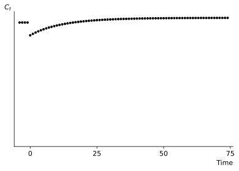

Note: Starting with no wealth, aggregate consumption rises quickly toward its steady-state ratio as households build their buffer stocks.
Christopher D. Carroll TractableBufferStock-Macro
Loosely following Carroll and Jeanne (2009) (with some simplifications), this note extends the model of A Tractable Model of Buffer Stock Saving to analyze macroeconomic dynamics in a small open economy with a large number of individuals, where the population statistics reflect the fulfillment of individual consumers’ ex ante expectations; for example, exactly proportion of households who are employed in period become “unemployed” before , so that the aggregate labor supply of the “active” (still employed) members of a generation evolves according to
| (1) |
where the first subscript denotes the date being examined and the second denotes the period of birth of the generation being examined.
We make strong assumptions that permit straightforward aggregation. The first such assumption is that newly unemployed households immediately migrate out of the country (think of British retirees moving to southern Spain).1 This means that macroeconomic variables will reflect only the circumstances of employed consumers, rather than a blend of the employed and the unemployed.
Each person is part of a single “generation” of households born at the same time, and every new generation is larger by the factor than the newborn generation in the previous period:
| (2) |
We assume that total production by the (surviving) members of a generation grows by the factor every period. If total production is to grow despite a shrinking number of surviving members of the generation, production per active capita must grow by , as the handout’s growth of individual labor productivity provides.
Consider the economy in some period 0 in which the size of the newborn population and the wage rate have been normalized to , and index each generation by its age , the number of periods since its birth. If the economy was created periods before period 0, so that its oldest generation has age , the ratio of the total population to the population of newborns will be
| (3) |
whose limit as is a finite number so long as . We assume that the population grows, ; since , that ensures both this and, below, a finite total labor income.
Relative to the labor income of period 0’s newborn cohort (), the total labor income in period 0 of the generation born in period is ; the sum of the incomes of all of the two-period-old individuals is , and so on; total labor income for all generations in the economy in period 0 is
| (4) |
which is finite because . The proportion of aggregate income accounted for by a generation born at any specific moment declines toward zero as time passes (old generations never die, they just fade away).
In the balanced growth equilibrium, the growth factor for aggregate population will therefore be and output per capita will increase by per period. Total labor income therefore grows by
We now examine this model under two assumptions about the initial “stake” of newborns in the economy. (We use “stake” to designate a transfer received by newborns). This is explicitly not an inheritance, as we have assumed that individuals have no bequest motive and newborns are unrelated to anyone in the existing population. Our motivation is to make the model more tractable, rather than to represent an important feature of the real world; the model without a “stake” can only be solved by simulation, and Figure 2 shows how its aggregate consumption evolves when households start with no wealth. Both figures are drawn by the handout’s notebook; run it in your browser, with nothing to install, in JupyterLite, or open it in Colab or Binder.
We first consider a version of the model in which an exogenous redistribution program guarantees that the behavior of employed households can be understood by analyzing the actions of a “representative employed agent.”
If a benevolent source outside the economy were to provide every newborn with an initial transfer upon birth of size , then the newborn’s total monetary resources would be
| (5) |
Thus, per-capita market resources for members of the newborn generation would be exactly equal to the target level of market resources for a person anticipating the future path of labor income that the members of the newborn generation actually anticipate (which is the same as the future path anticipated by all other generations as well).
If such a transfer policy had been in place forever, the economy at every point in time would consist of employed households whose consumption had been equal to its steady-state value for their whole lives. That is, every individual agent in this economy would be identical in their ratio of consumption, market resources, etc. to permanent labor income. The behavior of any individual would therefore be fully captured by the behavior of a representative employed agent.2
The foregoing scenario assumed that the “stake” is provided by a mysterious “benevolent source outside the economy.” Fortunately, there is an easy way to eliminate this problematic assumption: Assume that the stakes are financed by a wage tax.
The size of the required tax rate is calculated as follows. The total size of the resources transferred to the newborn generation must be
| (6) |
where
| (7) |
is the after-tax wage rate for the economy as a whole (and is the steady state target ratio of bank balances to after-tax wages).
From (4), the ratio of total aggregate labor income to the labor income of the newborn generation is
| (8) |
so, since the stake is times the after-tax wage, the aggregate wage tax rate required to finance a “stake” of size for newborns is given by
| (9) |
Note, however, that in an economy where this tax has existed forever, the consequence of the tax is effectively just a permanent reduction in after-tax labor income by proportion , compared to its value in the absence of the tax. Given the homotheticity of the model, a permanent rescaling by a constant factor leaves the scaled version of the individual’s problem (and its solution) unchanged. Thus we can conclude not only that a representative agent exists in this economy, but that the steady-state characteristics of the representative agent’s problem are identical (in ratio form) to the characteristics of the unrescaled individual’s problem; that is, , , and so on.
Matters are not much more complicated outside the balanced growth steady state, so long as we assume that the government always transfers the amount to newborn households, financed by the tax derived above. Consider, for example, an economy that was in steady-state equilibrium leading up to period , and at the beginning of there is a sudden realization that future growth rates will be higher than those anticipated and experienced in the past: after . Since expected growth rates affect , the tax rate must be immediately and permanently changed so that the generations born after receive a “stake” of the proper new size. This change in has two consequences for the generations that survive from periods prior to . Under the old tax rate, they would have experienced ; the change in expectations has no effect on or but changes the tax rate to . Thus these households will have an actual resource ratio that differs from its new target value, , both because the after-tax income scaling factor has changed and because the target ratio has changed from to .
However, if we started out in steady-state, the ratio problem of every member of the continuing-employed population is identical to that of every other such household (though, again, their masses differ depending on age, etc); as a result, the dynamics of the economy are fully captured by keeping track of the relative weights in the economy of the (gradually diminishing) “representative shocked agent” and the (gradually increasing) “representative new agent” whose behavior is locked at its steady-state value.3
Figure 1 illustrates the dynamics in this economy using an experiment identical to the handout’s final experiment for the individual’s problem: In period 0 there is a one-off decline in the future discounting rate (assuming the economy was in steady state before period 0). In that experiment, each individual consumer’s consumption function shifted down, and consumption experienced a discrete jump downward, because the agent became more patient. Here, there is a modest further effect: With more-patient consumers, the tax rate that the government sets to finance a transfer of to the newborns must be larger (so that the ratio of initial assets to after-tax income is larger). The higher tax also lowers the after-tax income of the households alive at the change, so they start from , a little above the old target, as the figure shows. Qualitatively, the dynamics are indistinguishable from the individual consumer’s dynamics obtainable without working through the extra complication involved in accounting for the “stakes.”

Note: With stakes, aggregate consumption behaves like an individual’s: it drops, then rises to a higher ratio.
The polar alternative to assuming that newborns get a “stake” is to assume that newborns enter the economy with zero assets. Analysis of this version of the model must be performed using simulation methods, because households of different ages will have different levels of assets. (Because the consumption function is concave and has no closed form, aggregation cannot be done analytically.)
Our simulation procedure assumes that at date 0 the economy has existed forever (so that the age distribution of relative populations and productivities are at their steady-state values), but saving has been impossible prior to period 0.4 With everyone’s , the ratio of market resources to permanent labor income is the same for all individuals, whatever their age :
| (10) |
The consumption ratio in period 0 is therefore for every household (regardless of age), while the level of per-capita labor income for a generation of age is .5 The population of such workers is , so aggregate consumption will be given by the per-capita consumption ratio, multiplied by the per-capita level of permanent income, multiplied by the population of workers still alive:
| (11) |
The longer a generation lives, the more time it will have had to save toward its target level of wealth; but newborns always begin life with no assets. After period 0, therefore, age-heterogeneity in assets and consumption ratios creeps into the population.
The foregoing discussion contains (in some cases implicitly) all the assumptions necessary to conduct a simulation of this economy. Figure 2 shows the path of , aggregate consumption as a ratio to aggregate labor income, starting from period 0 for an economy under the benchmark parameterization of A Tractable Model of Buffer Stock Saving. The only extra parameter required beyond the handout’s is ; we choose corresponding roughly to the postwar population growth rate in the United States.
Note: Starting with no wealth, aggregate consumption rises quickly toward its steady-state ratio as households build their buffer stocks.
Carroll, Christopher D., and Olivier Jeanne (2009): “A Tractable Model of Precautionary Reserves, Net Foreign Assets, or Sovereign Wealth Funds,” NBER Working Paper Number 15228, https://www.econ2.jhu.edu/people/ccarroll/papers/cjSOE.